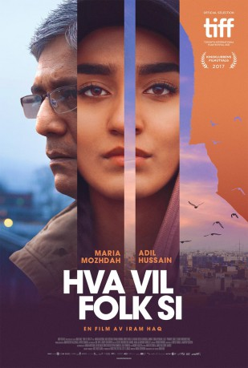

#11963 Was werden die Leute sagen
Alternativ: What Will People Say (Englischer Titel)
 
 IMDB-Wertung: 7.4 / 10
IMDB-Wertung: 7.4 / 10  Metascore: 69
Metascore: 69 
Die fünfzehnjährige Nisha lebt ein Doppelleben. Zuhause gehorcht sie strikt den Traditionen und Werten ihrer pakistanischen Familie. Draußen mit ihren Freunden verhält sie sich wie ein ganz normaler norwegischer Teenager. Doch als ihr Vater sie mit ihrem Freund erwischt, kollidieren ihre beiden Welten brutal. Nisha wird von ihren Eltern gekidnappt und nach Pakistan gebracht. Sie hat Angst und fühlt sich allein in der Fremde. Trotzdem entdeckt sie Stück für Stück das Land und die Kultur ihrer Familie.
Jahr: 2017
Dauer: 102 Minuten
FSK: 12
Land: Norwegen Studio: Pandora Film VerleihTonspuren:
Untertitel:
Auflösung: SD (720x436) Größe: 999 MB
Genre: Drama
Regisseur: Iram Haq
Drehbuch: Iram Haq
Soundtrack: Lorenz Dangel, Martin Pedersen
Darsteller:
 Adil Hussain als Mirza
Adil Hussain als Mirza- Ekavali Khanna als Mother Najma
- Rohit Saraf als Amir
- Ali Arfan als Asif
- Sheeba Chaddha als Aunt
- Lalit Parimoo als Uncle
- Jannat Zubair Rahmani als Salima
- Farrukh Jaffar als Bestemor
- Maria Bock als Social worker
 Jan Gunnar Røise als Customer
Jan Gunnar Røise als Customer- Sunakshi Grover als Leila
- Maria Mozhdah als Nisha
- Isak Lie Harr als Daniel
- Nokokure Dahl als Emily
- Eliza Raja als Ameena
- Naeem Azam als Amjad
- Assad Siddique als Abdullah
- Trine Wiggen als Social worker
- Sara Khorami als Social worker
- Juliet Skogen als Iben
- Jonas Kvitting als Marcus
- Balwinder Kaur als Relatives
- Sarangi Agnihotri als Relatives
- Kjersti Elvik als Teacher
- Freddy Singh als Majid
- Noreen Iqbal als Majid's Cousin
- Neelam Sharma als Majid's Aunt
- Nora Skielvan Dal als Nisha's Classmates
- Emma S. Hinrichsen als Nisha's Classmates
- Mone Frogg Christiansen als Nisha's Classmates
- Surinder Agnihotri als Birthday Guest
- Vara Raturi als Saera
- Hemant Sharma als Pakistani Teacher
- Kailash Soni als Selger
- Alisha Parveen als Girls
- Kanak Sharma als Girls
- Poorvi Jain als Girls
- Ramesh als Transvestites
- Reshma Kinnar als Transvestites
- Devender Chauhan als Policeman
- Sadanand Patil als Policeman
- Sameer Kamble als Policeman
- Mahesh Vaishnav als Full mann
- Selma Ibrahim Karlsen als Nisha's Body Double
Datei: X:\2017(N-Z)\Was werden die Leute sagen (2017, FSK12, 720x436).mkv seit 26.10.2019
Festplatte: HD 2017(A-Z)-2018(A-F)
 Es gibt insgesamt 170 Filme in der Gruppe '2017(N-Z)'
Es gibt insgesamt 170 Filme in der Gruppe '2017(N-Z)'